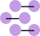

<header class="header" [ngClass]="{ 'panel-opened': isPanelOpened, header_shadow: isPageScrolled }">
  <div
    class="header-content sticky"
    [ngClass]="{
      'header-content_sticky': headerConfig.stickySubtitle,
      'hamburger-version': showHamburgerVersion$ | async
    }"
  >
    <a [routerLink]="['/']" (click)="onLogoClick()" class="main-link">
      
      <p>
        Leiomyosarcoma <br />
        Project
      </p>
    </a>
    <nav *ngIf="headerConfig.showMainButtons" class="header__nav">
      <app-nav *ngIf="!(showHamburgerVersion$ | async)"></app-nav>
    </nav>

    <nav class="header__nav" *ngIf="(showHamburgerVersion$ | async) && isPanelOpened">
      <app-mobile-nav class="mobile-nav"></app-mobile-nav>
    </nav>

    <div *ngIf="headerConfig.stickySubtitle || headerConfig.showBreadcrumbs" class="activity-heading">
      <div *ngIf="headerConfig.showBreadcrumbs" class="breadcrumbs">
        <app-workflow-progress
          [currentActivityCode]="headerConfig.currentActivityCode"
          [workflowStartSectionsVisibility]="headerConfig.workflowStartSectionsVisibility"
        >
        </app-workflow-progress>
      </div>
      <div *ngIf="headerConfig.stickySubtitle" class="sticky" [innerHTML]="headerConfig.stickySubtitle"></div>
    </div>

    <div class="auth" *ngIf="isAuthenticated && !(showHamburgerVersion$ | async)">
      <div
        *ngIf="headerConfig.showLoginButton"
        class="auth__login header-link"
        [ngClass]="{ 'header-button': !headerConfig.showMainButtons }"
      >
        <ddp-sign-in-out></ddp-sign-in-out>
      </div>
      <div class="auth__dashboard">
        <ng-container *ngTemplateOutlet="dashboardButton"></ng-container>
      </div>
    </div>

    <aside
      *ngIf="!isAuthenticated && customService.showLoginButton && !(showHamburgerVersion$ | async)"
      class="loginOutButtons"
    >
      <app-login-out></app-login-out>
    </aside>

    <button
      *ngIf="showHamburgerVersion$ | async"
      class="hamburger hamburger--slider"
      [ngClass]="{ 'is-active': isPanelOpened }"
      [attr.aria-label]="'Common.Buttons.HeaderMenu.AriaLabel' | translate"
      (click)="openCloseMenu()"
    >
      <span class="hamburger-box">
        <span class="hamburger-inner"></span>
      </span>
    </button>
  </div>
</header>

<ng-template #dashboardButton>
  <button class="header-link simple-button cmiBtn" routerLink="dashboard" routerLinkActive="header-link_active">
    <div></div>
    <span translate>Common.Navigation.Dashboard</span>
  </button>
</ng-template>
